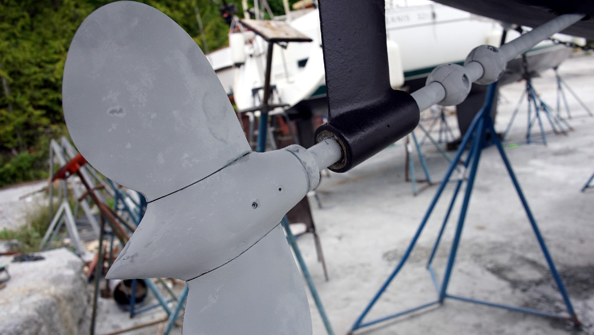

hauling out

Tasks like hauling-out (to get the bottom painted, change zincs, or effect repairs) is necessary once every 2-3 years for an offshore boat, but can be every year. How often you haul out depends on your personal preference(and the size of your wallet).
Boatyards use a variety of systems to a haul a boat out of the water, like a travel lift, a tractor-pulled hydraulic sling lift trailer, or a motor-driven cable cart. The boat is driven to an area(full lift), propped up by adjustable boat stands(of varying design), with a ladder provided to allow you to step on and off of the boat. It is also possible to do a half-lift, in which they will let the boat sit in the slings for a few hours(for surveys, minor inspection, washing, etc). Rules for boatyards vary, but many will require wet-sanding to allow the old antifoul to stay out of the air and to be contained, as opposed to dry-sanding. When going to a yard for the first time, ask of their rules for removing anti-foul, and for garbage and oil disposal.
{kind=link}
{kind=link}
{kind=link}
{kind=link}
{kind=link}
Some boatyards lend out tools, but not all will do this.
When out of the water, don't forget to...
- Check your cutlass bearing (push up on the prop to see if there is any play, there shouldn't be).
- Grease the inside of your prop(if you have a fancy feathering prop).
- Replace the boat zincs (shaft, hull(if any)).
- Replace or service the packing for your shaft and/or rudder seal. Dripless types need to be replaced out of the water, because it is necessary to undo the engine coupling to pull back the shaft to remove, and insert a new bellow(see propeller maintenance to see our dripless seal replacement).
- Check the hull for blisters.
Bottom paint: If the goal is to wait longer between haul-outs, paint more coats (2-3), otherwise aim for 1 coat every year. We use a high-copper ablative anti-fouling with multi-season use, paint like this is very expensive and a bit difficult to mix(we use a mixing attachment for paint on our hand drill). Some paint is cheaper, but it will not repel growth as well, or for as long. All ablative wears out over time, becoming less effective at repelling sea critters. Some sailors like to use a different color paint per haulout to differentiate between the various layers, making it easier to keep track of build-up. We do not care to do this, we've always used black paint.
Eventually, stripping the bottom of all paint down to the gelcoat is necessary, paint can build up and the older layers will start to flake off, making it difficult for new paint to adhere to the bottom. If painting the bottom from gel coat, adding a layer of primer is necessary so that the antifouling paint can adhere to the boat. We have no experience with Coppercoat, or hard bottom paint, but we've met other sailors who swear by it.
Don't know how much antifouling paint to buy for your boat? You can estimate it by calculating the surface area of the hull. There are different formulas for sailboats with fin keel and with a full keel.
FIN KEEL FORMULA: Waterline length x (beam + underwater depth) x 0.5 FULL KEEL FORMULA: Waterline length x (beam + underwater depth) x 0.75 Calculations for Pino: 8.20 x (3.35 + 1.90) x 0.5 = 21.525 m²
Next, look up the coverage rate of the antifouling paint you chose. This information is typically listed on the paint's product data sheet and/or in the product description. For example, Pettit Antifouling paint comes in a 3.8 L (1 US Gal) can and has a coverage of 400 square ft/gallon (or 9.8 square m / liter). To find square m/L measurement, multiply the square ft/gal measurement by 0.025.
Use the following formula to get an estimate of the total litres of antifouling paint required by your boat:
Surface Area (m2) ÷ Coverage Rate (m2)/L = total litres of antifoul required Calculations for Pino: 21.525 / 10 = 2.15 L for one coat
Again, these calculations are approximate, for Pino we found we needed a bit less than 1.9 L for one coat of paint, in fact we had enough for about 1/4 of a 3rd coat (more than enough to coat the area under the pads holding up the boat).

Strut and prop: Coating your prop and strut with PropSpeed (see image above) works fine to keep growth off, but it is very very expensive($359CAD) and it takes a lot of work to grind off. Sailors often buy the product to share with others to keep costs down, this is what we did when we hauled out in New Zealand and in Japan(we wanted to give it a shot). There are also zinc-based sprays, we used this when hauling out in 2025, 1 can costs $55CAD and good enough for another coat in a subsequent haul-out. See propeller maintenance if you want advice on maintaining a feathering propeller.
If your boat comes out of the water for a haul-out every year, a cheap alternative is to coat metal with zinc cream(penanten) or anhydrous lanolin(reported by others). Both products are available at the pharmacy. Note that in our experience neither last very long in the water(we used it for 2 seasons in the Pacific Northwest), but it may be worth it if you haul the boat out on a yearly basis.